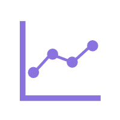

高能进度表刷 B 站的时候你有没有注意过，视频进度条上有时会有一坨一坨的"高能"标记？那是弹幕密集度算出来的，告诉你"这段是精华，别跳"。Itoc 的「高能进度表」就是从这个灵感来的——它把工程里所有事件按时间轴铺开，算出一条强度曲线，一眼就能看出哪一段"活儿最多"。
就讲「视图(V)」菜单里的「高能进度表」——窗口长啥样、图表咋操作、强度咋算的、CSV 咋导出。
关于时间轴、事件块本身的编辑，请参考对应的分项文档。
一、这玩意儿能干啥？
简单说就是：把工程里所有会"占用时间"的事件，按秒数铺开，算一条强度曲线。
它统计三类事件：
| 事件类型 | 权重 | 说明 |
|---|---|---|
| 🪟 弹窗（音符块） | 1.0 | 挂了 CZEmaker 配参的音符块 |
| 🎨 调整图层 | 0.5 | 每个调整图层持续期间 |
| ⚙️ 全局命令 | 2.0 | 每个命令算一个瞬时脉冲 |
| 💥 结束事件 | 1.5 | 窗口动画结束的时刻（如果命令里带了动画时长） |
把同一秒内所有活跃事件的权重加起来，就是那一秒的强度值。曲线画出来，哪儿高哪儿低一目了然。
它就是"给工程画一张心电图"。哪一段弹窗多、命令多、图层多，曲线就蹿得高；安静的地方曲线就趴着。
做演出的时候，拿来检查"高能是不是集中在高潮段"特别好使。
二、从哪儿打开？
菜单 「视图(V)」→「高能进度表」，点一下窗口就出来了。
工程里得有音符，不然打开后会提示"工程中没有音符，无法分析"。
毕竟没音符就没弹窗，没弹窗就没强度，算出来全是零也没啥好看的。
三、窗口长啥样？
窗口默认 16:9，居中弹出来，左边一窄条是控制面板，右边一大块是图表区。支持最大化、最小化、拖拽调整大小。
3.1 左侧控制面板
| 区块 | 里面是啥 |
|---|---|
| 节点间隔 | 采样间隔，单位秒。默认 0.5 秒，范围 0.05 ~ 60。数字越小曲线越精细，但计算越慢。 |
| X轴缩放 | 滑块，范围 0.1 ~ 10.0，拖动即时生效。 |
| Y轴缩放 | 滑块，范围 0.1 ~ 10.0，拖动即时生效。 |
| 统计信息 | 显示总时长、最大强度、平均强度、数据点数量。 |
| 导出 | 「导出 CSV」和「重置视图」两个按钮。 |
| 刷新 | 按当前设置重新算一遍。改了节点间隔之后要点它。 |
3.2 右侧图表区
一张白底折线图：
- 蓝色曲线：强度随时间的变化。
- 浅蓝填充：曲线下方的区域，带点颗粒感。
- 红点：每个采样点。
- X轴：时间（秒）。
- Y轴：强度值。
曲线用了平滑插值，所以看起来是圆滑的波浪，不是硬邦邦的折线。
四、图表怎么操作？
| 操作 | 效果 |
|---|---|
| 普通滚轮 | X 轴缩放（横向放大/缩小） |
| Shift + 滚轮 | 横向滚动（左右平移视图） |
| Ctrl + 滚轮 | Y 轴缩放（纵向拉伸/压缩） |
| 左键拖动 | 自由平移（上下左右都能拖） |
| 鼠标悬停 | 画一条橙色虚线跟着鼠标走 |
| 悬停在红点上 | 弹出提示框，显示该时间点的详细事件 |
| 双击图表 | 把主界面的判定线滚动到对应时间点 |
悬停在红点上，会弹一个小黄框，显示：
· 这个时间点的秒数和强度值
· 当前活跃的弹窗列表（最多 5 个，多了显示"还有 N 个"）
· 当前活跃的调整图层列表
· 当前活跃的全局命令列表
提示框出现时有滑入动画，消失时有淡出动画，挺讲究的。
4.1 双击跳转
这是最实用的一个交互：双击图表上任意位置，主界面的判定线会直接跳到那个时间点。
比如你在曲线上看到 30 秒附近有个大高峰，双击一下，主界面判定线"唰"地就滚到 30 秒那儿了，直接就能看那段发生了什么。
它会直接把主界面的判定线滚动到对应的时间点，效果和你在主界面拖动判定线到那个时间点是一样的。
如果主界面当前不方便联动，它会用备用方案直接设置节拍和判定线位置。
五、强度是怎么算的？
5.1 线段覆盖算法
核心思路很朴素：把每个事件当成一条线段，看看某个时刻有哪些线段盖在上面。
- 收集所有事件，每个事件有开始时间、结束时间、类型。
- 把所有"开始点"和"结束点"收集起来当关键时间点。
- 从 0 秒开始，每隔一个采样间隔取一个点。
- 对每个时间点，遍历所有事件，看看哪些正盖在这个点上。
- 把这些事件的权重加起来，就是这一点的强度。
5.2 节拍到秒的换算
事件在工程里存的是节拍，但高能进度表画的是秒。换算公式很简单：
秒 = 节拍 × 60 ÷ 目标BPM所以如果你改了工程的 BPM，强度曲线的时间轴也会跟着变。这很正常——BPM 变了，同样节拍对应的时间就变了。
5.3 结束事件是啥？
如果某个全局命令里带了窗口动画（比如 window_animation），并且能解析出 duration 字段，程序就会在那个命令开始时间的动画时长之后，额外插一个"结束脉冲"事件，权重 1.5。
为啥要这么做？因为一个窗口动画"真正结束"的那一刻，也算是一次高能时刻——它可能触发一堆后续逻辑。所以单独给它一个脉冲，让曲线在那一刻也蹿一下。
· 全局命令 2.0：瞬时但影响大，所以权重最高。
· 结束事件 1.5：也是瞬时的，略低于命令。
· 弹窗 1.0：持续事件，基准权重。
· 调整图层 0.5：也是持续的，但视觉上"没那么炸"，所以权重砍半。
六、导出 CSV
点「导出 CSV」按钮，选个保存路径，就能把曲线数据导出成 CSV 文件。
文件格式很简单，两列：
时间(秒),强度值
0.000,0.000
0.500,1.000
1.000,2.500
...可以拿去 Excel、Python、任何能读 CSV 的地方继续分析。比如画个更 fancy 的图，或者算算"平均强度""高能时间段占比"之类的。
七、计算过程与进度条
点「刷新」之后，会弹一个进度窗口，显示"正在计算强度序列..."，下面有个进度条，实时显示百分比和当前状态（"计算中... 123/456"）。
计算是在后台进行的，所以不会把界面卡死。你可以一边算一边干别的，算完了窗口会自动关闭，图表自动更新。
工程大的时候，采样点可能成千上万个，每个点都要遍历一遍所有事件，算起来挺费时间的。
要是在前台硬算，界面会"假死"几秒甚至几十秒，鼠标都动不了。放到后台就避免了这个问题。
八、常见问题
Q1：打开后提示"工程中没有音符，无法分析"？
字面意思，工程里没音符。先加载 MIDI 或者导入工程，有了音符再开高能进度表。
Q2：曲线全是平的，一点起伏都没有？
可能的原因：
- 工程里没有挂 CZEmaker 的音符，也没有调整图层和全局命令。那就真的没事件，强度恒为 0。
- 采样间隔设得太大了（比如 60 秒），把短事件都"跨"过去了。把节点间隔调小再刷新试试。
Q3：改了节点间隔，曲线没变？
节点间隔改完要点「刷新」才会重算。它不是自动重算的。
Q4：为什么曲线看起来"一顿一顿"的？
因为强度是按采样间隔离散计算的，本质上是个阶梯函数。程序做了合并（相邻的相同值会被去掉），再做了平滑插值，所以看起来比较圆滑。
如果还是觉得不够平滑，把采样间隔调小一点（比如 0.05 秒）再刷新哦。
Q5：双击图表跳转，主界面判定线没动？
检查一下：
- 双击的位置是不是在绘图区域内（左边 Y 轴、下边 X 轴、标题区域都不算）。
- 主界面有没有正常打开（判定线得存在才能滚）。
- 控制台有没有报错信息（
【高能进度表】开头的日志）。
Q6：为什么计算要等这么久？
取决于两件事：
- 工程事件数量：事件越多，每个采样点要遍历的线段越多。
- 采样点数量：总时长 ÷ 节点间隔。间隔越小，点越多。
比如一个 5 分钟的工程，节点间隔 0.05 秒，那就是 6000 个采样点。每个点遍历一遍所有事件，事件多的话确实会慢一点。耐心等等，进度条会告诉你算到哪了呀。
Q7：CSV 里的时间和主界面显示的时间对得上吗？
对得上。CSV 里的"时间(秒)"就是按当前目标 BPM 换算出来的，和主界面时间轴、判定线是同一套换算。
Q8：重置视图是干嘛的？
把 X 轴缩放、Y 轴缩放、平移偏移全部归零，回到"一开始看到的样子"。拖乱了、缩糊了，点一下它就清静了。qwq
九、小结
「高能进度表」是把工程"翻译成一条强度曲线"的工具。关键就记住这几条：
- 入口：「视图(V)」→「高能进度表」。
- 算法：线段覆盖，把同一时刻所有活跃事件的权重加起来。
- 权重：命令 2.0、结束事件 1.5、弹窗 1.0、图层 0.5。
- 操作：滚轮缩放、Shift 横滚、Ctrl 纵缩放、拖动平移、悬停看详情、双击跳判定线。
- 导出：CSV 两列，时间(秒) + 强度值。
- 刷新：改了节点间隔要手动点刷新，计算在后台线程跑，不卡界面。
做演出的时候，拿它检查一下"高能是不是堆在应该堆的地方"，挺好使的。玩得开心！有什么问题或者想法，欢迎去 「帮助(H)」→「前往Itoc官方论坛交流区！」 找我聊天喵 ( ⓛ ω ⓛ *)